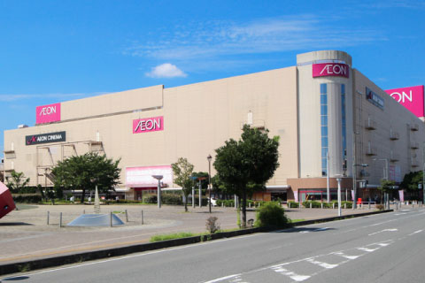

-
イオン大井店／約800m
イオン大井店／約800m
営業時間
7:00～22:00
映画館、ゲームセンター、フードコートもあるので、ご家族みんなで楽しめます。隣には東久保中央公園があります。(駐車場:1326台）
※イメージ
大型ショッピング施設をはじめ、公園や学校・保育園、
さらには図書館や市役所、総合病院など暮らしに直結した施設が整う周辺環境。
家族生活に便利さと楽しさをプラスする子育て世帯に嬉しいロケーションです。
イオン大井店／約800m
イオン大井店／約800m
営業時間
7:00～22:00
映画館、ゲームセンター、フードコートもあるので、ご家族みんなで楽しめます。隣には東久保中央公園があります。(駐車場:1326台）
トナリエふじみ野／約1.9km
トナリエふじみ野／約1.9km
営業時間
10:00～20:00
普段づかいのお店が充実！スーパー「ロピア」を中心に、約40店舗を擁するショッピングモール。(駐車場:400台）
ピアシティふじみ野／約1.5km
ピアシティふじみ野／約1.5km
営業時間
9:00～24:00
「カスミフードスクエア」と「ヤマダ電機」が核店舗となるダイソー、マツキヨ、サイゼリア他のショッピングモール。(駐車場:320台）
ビバモール埼玉大井／約1.5km
ビバモール埼玉大井／約1.5km
営業時間
9:00～23:00
「スーパービバホーム」と「イトーヨーカドー」が核店舗となる約20店舗を擁するショッピングモール。(駐車場:2000台）
イオンタウンふじみ野／約3.3km
営業時間
8:00～23:00
店舗により異なります。
1800台 約90店舗
ららぽーと富士見／約4.2km
営業時間
9:30～21:00
店舗により異なります。
5100台 約290店舗
ウエルシア大井町中央店／
約310m
営業時間
9:00～24:00
（調剤薬局10:00～20:00）
亀久保中央公園／約400ｍ
亀久保中央公園／約400m
春はお花見スポット。夏になると、じゃぶじゃぶ池に水が流れ、一層賑わいます。ボール遊びもできる広い公園です。
東久保中央公園／約850ｍ
東久保中央公園／約850m
毎年夏に開催される「大井まつり」の会場。カリヨン広場の愛称で親しまれ、様々なイベントが行われます。
西ノ原中央公園／約1.6km(自転車8分)
すべり台の種類が豊富で複合遊具が充実。山の地形を活かした楽しい工夫が随所にあり、子どもたちが夢中で遊べます。
ふじみ野市立大井小学校
距離
約950m（徒歩12分）
ふじみ野市立大井中学校
距離
約830m（徒歩11分）
明晃会 緑保育園
距離
約390m（徒歩5分）
文京学院大学ふじみ野幼稚園
距離
約550m（徒歩7分）
風の里保育園
距離
約950m（徒歩12分）
ふじみ野どろんこ保育園
距離
約1100m（徒歩14分）
ふじみ野市立大井図書館
距離
約380m（徒歩5分）
ふじみ野市立大井総合支所
距離
約380m（徒歩5分）
｢池袋｣駅へダイレクトアクセス、都心の主要拠点へスマートにつながる歓びを実感する住環境。通勤通学での利便は勿論、朝の通勤時間帯と夜にのみ運行する「TJライナー」はふじみ野駅と池袋駅間をノンストップで繋ぎます。
東武東上線「ふじみ野駅」より
※掲載の電車所要時間は、乗換え時間 等 を含んだ通勤時 のものです。 通勤時は 7:30～9:30 に到着する電車を表記しています。（ Yahoo! 路線情報2024年 6月版調べ） ※池袋駅へは東武東上線を利用。※新宿駅へは池袋駅でJR湘南新宿ラインに乗換。※渋谷駅へは池袋駅でJR湘南新宿ライン快速に乗換。※東京駅へは池袋駅で東京メトロ丸の内線に乗換。